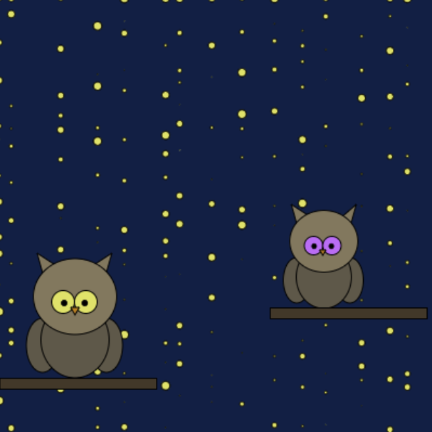

Generative Art - How To
What I Created
For this project, I created a webpage of a scene with two owls perched on a branch and stars using functions, loops, and conditionals. The stars (made with ellipses) were constantly changing sizes, and the owls' eyes changed color when the screen was clicked. When the mouse clicked the screen on the left side, the eyes of the owl on the left side changed color. The same thing happened with the owl on the right when the right side of the screen was clicked. Though, the ellipse were constantly changing size and position. I created this page to convey the idea of adventure. This is because I really enjoy being out in nature and going on adventures. Therefore, I used my webpage to in a way, portray a little bit of who I am as a person.
How the Project Works Overall
In order to create my webpage, I had to use a variety of functions, conditionals, and loops. These were all really important to use when coding because they were what created the images/objects that appeared on the webpage and allowed them to move or change a certain way.
Specifics of the Code
Functions
Functions were really important when creating my webpage because
they made up a big portion of my project. They were what allowed me to create the owls, tree branches, and stars
that are seen on my page. In order to create the owls and the stars, I used the ellipse function which is formatted
like this when coded:
ellipse(_, _, _, _);
The first two values control where on the canvas/webpage the
ellipse shows up. The first one moves the ellipse left and right while the second one moves the ellipse up and
down. The last two values control the length and width of the ellipse. The first value controls the width and
the second value controls the height of the ellipse. Here is an example of how I coded one of my owls:
Here is how the code appeared on my webpage:
A similar code was used to create my second owl on my webpage, though the values were slightly different.
However, I also created my own function, which I named "owl". All of the code used to create the owls were placed inside this function. This allowed all of the code within this function to run when the fuction was called, or defined. This is how my owl function looked when coded:
This is an example of how I defined, or called, my owl function:
Loops
In addition to functions, I used loops. Specifically, I used "for loops" which allowed my block of code to run over and over again. I used these loops for my stars, which is why they are constantly changing positions and size. Since I wanted the circles to be different sizes and in a different position each time, I coded it so that the height, width, and size was random each time. This is how the code for the stars/ellipses looked and how it appeared on my webpage:
As you can see in the pictures depicting my webpage, because the height, width, and size were set to random, the circles were in different positions and had different sizes each time.
Conditionals
The last part of my code that I used while creating my webpage was the if/else statement. These made it so that when the mouse was clicked on the left side of the webpage, the owl's eyes on the left side of the page changed color and when the mouse was clicked on the right side of the webpage, the owl's eyes on the right side of the page would change color. The "if" statement for my webpage meant that if the mouse was clicked on the left side on my screen, the eyes of the owl who was on the left side would change color. In order to make this possible, I had to make the mousex (which controlled the width of the page) to be smaller than a certain value to ensure it was of the left side.

As you can see, because the screen was clicked on the left side of my page, the eyes of the owl eyes of the owl changed to different colors, while the eye color of the owl on the right side remained the same.
The second part of the conditional is the "else" statement, which says that if the statement is false, run the code under the else statement as the alternative.

Since the else statement was the alternative code if the if statement was false, when the screen was clicked on the right side of the canvas, the eye color of the owl on the right side changed instead.
Coding Choices and Decisions
While coding my webpage, I had to make many choices including colors, patterns, and placement of objects. However, the biggest decision that I had to make was deciding what I was going to include on my webpage and the scene that I was going to portray. I started off by thinking of potential scenes that I can create. I also thought of ways I could include loops, functions, and conditionals in each of the scenes while also making it interactive for the user. I knew that I wanted the color of an object to change color when a user clicked on the screen. I also knew that I wanted something moving or changing in the background. That is how I decided on creating my final product with the owls and the stars.
Limitations
One problem that I faced was coding the ellipse function (that created the stars) to do what I wanted. I wanted the size and placement of the ellipses to constantly change. Therefore, I put I used the for loop. In the beginning, I was only able to create my webpage so that the sizes of the ellipses were different or the ellipses were the same size and blinking. None of these ways that I tried had the ellipses constantly changing position and changing size at the same time. This was a limitation for me because the majority of the times that I tried to get the ellipses to look like how I wanted them to look did not work out. This meant that I had to take multiple approaches to solving the problem. As I looked at my code, I realized that a potential solution would be to make it so that the height and the width of the ellipse was random. Doing so, I was able to fix my problem and get the stars to do what I wanted.
How My Perspective Has Changed
My perspective over the duration of this project has changed because in the beginning, I thought that it would be really difficult to find a way to incorporate loops, conditionals, and functions in my webpage. Though, was I began to create my webpage, I learned that I just have to be creative and remember what each part did. This made it a lot easier for me to think of ways to include all three tools. Going into this project, I also thought that coding my webpage would be a lot easier. However, as I began running into problems, I learned that the order and placement of my code really mattered and can really change the outcome of the webpage.
What I Would Change
Although I got was able to create the majority of my webpage to look the way I wanted and do the things I wanted it to do, there were also specific elements that I would have wanted to include and slightly alter. First off, although I think that the owls look good, I would have wanted to make the eyes a little bit bigger. In addition, I created the owls to be on tree branch, but as you can see on my webpage, there are no trees and only the branches. If I had more time to work on my webpage and improve it, I would have wanted to make trees like I had envisioned.